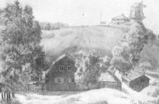
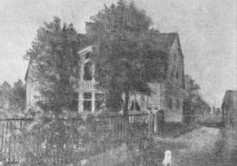
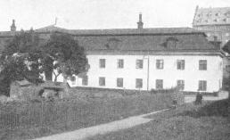
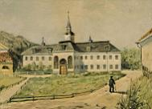
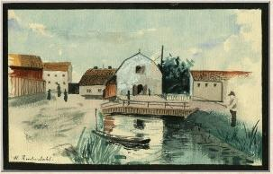
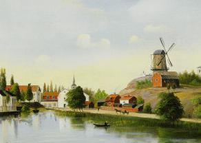
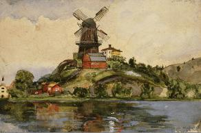
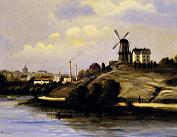
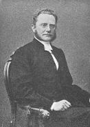
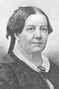

Södermalm i tid och rum. Stockholm
Danviks prästgård
|
 
Danviks gamla prästgård på norra sidan av Danviksklippan. |
Det herdatjäll Gustaf Hammarstedt flyttade in uti 1864, då han blivit utnämnd till kyrkoherde i Danviks ochSiklaö församlingar, var en liten röd stuga i Södra bergen, strax utanför muren med den stora inkörsporten tillDanviks hospital. Prästgården var omgiven av ett högt svartstaket, innanför vilket syrenerna blomstrade i försommartid, på gården stodo uråldriga lindar, och så fanns där enliten ladugård - det hela en av Söders många försvunna idyller. En förträfflig husmor fick som nämnt den lillaprästgården i »lilla mormor Öberg», fru Hammarstedts fostermor. Vilken frid och hemtrevnad rådde där ej i degammalmodiga små rummen, och hur väl passade ej mormors gamla möbler från Rosersbergstiden! Här hade nuäntligen kyrkoherden fått ett hem, där han kunde ta emot de sina. I regeln blev det varannan söndag som familjen gästade prästgården. Fru Hammarstedt - som eljest var så rörande fri från anspråk på denna världens komfort - kostade då gärna på sig lyxen av en hyrvagn. Vare sig det så var Joulin, Käck eller Westerling som fick beställningen, skickade de alltid |
| en av sina finaste vagnar, och vi barn tyckte det tedde sig väldigt stiligt, när hästarna sprängde in i det stora ekandeportvalvet i Brunkebergs hotell, och fru Hammarstedt, klädd i svart sidenkappa, tog plats i ekipagettillsammans med döttrar eller helpensionärer. Kyrkoherden hade alltid åtskilliga läsbarn från skolan (Hammarstedts flickpension), däribland naturligtvis sina egna döttrar. Tre gånger iveckan - läsdagarna och söndagen - gingo läsflickorna ut till prästgården. Vägen var ju ganska lång, i synnerhetnär Strömmen låg frusen, så att de små ångsluparna från Räntmästartrappan till Tegelviken ej kunde gå, vilket på den tiden var ganska ofta, ty man gjorde sig i allmänhet ej besvär att hålla någon ränna öppen. |
  Prästgården efter ombyggnad 1881.
Prästgården efter ombyggnad 1881. |
|
  Danviks hospital. En av längorna
Danviks hospital. En av längorna
|
Vi voro förtjusta åt dessa promenader med deras betagande Söderstämning och åt vistelsen iprästgården. Särskilt festliga syntes oss söndagarna, då efter gudstjänsteni Danviks originella gamla kyrka, inbyggd i en av hospitalslängorna, brasorna sprakade i prästgården, veckansnummer av Förr och nu, alltid med en berättelse av Lea, samt av Illustrerad tidning lågo på förmaksbordet, och vifingo slå oss ned med dem i den visst tre meter långa soffan. Ibland berättade kyrkoherden för oss om sina fångar.Han var nämligen predikant vid Stockholms rannsakningshäkte, en verksamhet för vilken han med sin storamänniskokännedom och varma mänsklighet och frihet från alla prelatmanér passade utmärkt. |
| En gång när två fångar skulle mista livet anhöllo de som en nåd att kyrkoherde Hammarstedt, som de lärt känna under rannsakningen, skulle i stället för den ordinarie fängelsepredikanten få följa dem till stupstocken. Deras bön beviljades av myndigheterna, liksom ju ej heller kyrkoherden ville neka den.Men hur upprörande akten skulle verka på hans nervsystem sade han sig ej ha kunnat ana, och han ansåg det vara lämpligare att vid dylika tillfällen en präst som ej kände de dödsdömda officierade. Inom sina egna församlingar hade kyrkoherden en tid och krafter krävande verksamhet, och sällan har väl en själasörjare varit så avhållen som han. I Siklaö församling lågo de stora gårdarna Hammarby, Henriksdal, Sikla, Järla, Nacka, Erstavik, Gäddviken, Nyckelviken m. fl.,och så var detDanviks hospitals församling. Kyrkoherden kunde aldrig gå igenom den gamla hospitalsgården - en sällsynt tjusande plats med sina gamla dubbla lindalléer - utan att någon av hospitalets kroppsligen eller andligen sjuka kom och drog honom i rocken och bad att få tala med »Kyrkarn». |
  |
 Entrén till Danvikens hospital från söder. 1909. Magasinet t v, byggt på Johan III:s tid, har först varit myntverkstad, sedan magasin. Äldsta huset vid Danviken. Klicka på porten för närbild! |
|
| Det gick väl heller aldrig en dag utan att någon sökte sig upp till prästgården.Bland andra kom där gamla Beata, som varit trotjänarinna hos Löwens på Häringe, vanligtvis storgråtande, i oro för sin själs salighet. Som hon var så gott som stendöv, hörde man vid dessa tillfällen kyrkoherden ropa med stentorsstämma, och det lät som om han läxade upp den värsta brottsling: »Nu ska Beata vara lugn. Herren är nådig, och Kristus har dött för oss alla.» Hon gav bort sina postillor när hon trodde att hon skulle dö, men hon tog dem tillbaka när hon blev frisk igen, vilket hon försiktigtvis skrivit med stora bokstäver i dem att hon skulle göra. En helt annan typ var den blida och vänliga blinda Lovisa, som fick komma en gång i veckan och höra kyrkoherden läsa ur Wallis' världshistoria, vilket var denna begåvade lilla gummas största glädje på jorden. |
 Danvikens kvarn söderifrån. Henrik Reuterdahl, 1889 |
  Vy från söder.
Vy från söder. |
Där kommo med sina bekymmer arbetare och deras hustrur från Södra varvet och Gäddviken,fattiga från Katarina församlings utkanter, frigivna fångar, som tydde sig till kyrkoherden, när de med två tomma händer och »orent betyg» skulle ut i livet igen, gamla läsbarn, som det på ett eller annat sätt gått illa för, skalder och konstnärer, som hade ont om födan, bland dem Carl Ludvig Törnberg, pseudonymen Calixtus, som av Svenska akademien fick ett pris eller åtminstone ett hedersomnämnande för ett diktverk, Mira, och som var en flitig medarbetare i Söndags-Nisse,samt målaren Per Ekström. Hur aktad och avhållen kyrkoherde Hammarstedt var av varvsarbetarna fick jag ett oförglömligt intryck av när gamle skräddar Palm för första gången lät höra sin socialistiska förkunnelse i södra bergen. När han slutat steg kyrkoherden fram och sade: |
»Ni känner mig alla här och kanske tillåter också mig att säga ett par ord.» Det sätt varpå dessa ord upptogos lät mäster Palm,som var en klok karl, förstå, att här dugde det ej att komma med några hånfulla ord om svartrocken. Han svarade sakligt och hövligt och slutade med: » I grunden menar nog den här prästen och jag detsamma.»
Tvenne var på sitt sätt ovanliga personligheter inom kyrkoherdens krets voro folkskolläraren Ögrim och magister Philip Hierta. Den förre, begåvad och ärelysten, slöt sig sedermera till frälsningsarmén och var en tidhögste chef för dess svenska avdelning. Den senare hade på egendomen Lugnet vid Järla ett hem för fattigapojkar, vilka han under stora bekymmer underhöll genom hoptiggda gåvor. Han lyckades få fram flera av gossarna till studentexamen och även attskaffa dem tillfälle till vidare studier. Bland dem som hade magister Hierta att tacka för sin utbildningfunnos både präster och läkare. Det var just det betecknande fördetta barnhem, att magister Hierta tog vara på de intellektuella förmågorna och lät dem gå den lärda vägen. Ack,Lugnet var visst ingen mönsterinrättning; den s. k. Trasskolans i Hornskroken skapare, Lindgren, beklagade sigen gång för kyrkoherden över att gossarna foro illa. Detta kunde kyrkoherden ju ej neka till, men han framhöll,att de haft ändå sämre innan magistern tagit hand om dem, och att han och hans hustru svulto och fröso tillsammans med pojkarna. Om »mor Hierta» skrev kyrkoherden vid hennes död:
sänktes neder? En gumma, trött av arbete och möda. Med tacksamhet hon minnes av de leder, som bilda sorgetåget åt den döda. |
 Hammarby sjös östligaste del söderifrån med Danviks hospital till vänster och Danviksklippans kvarn till höger. 1892 |
moder var hon, som i försakelse och bön har levat; för mången man och mången yngling har hon i deras flydda barndoms- dagar strävat. |
Magister Hiertas son i ett senare gifte, major Philip Hierta, var en av de svenska officerare som gingo i tjänst i Persien. Han stupande därute.
Till kyrkoherdens umgänge inom församlingen hörde familjerna Beckman, kamrerns och ordningsmans vid hospitalet, Almgrens på Hammarby, Hagmans på Järla, Swartlings vid Danviks kvarn, Schmiedtes i Färgargården, Holmströms på Barnängen, Telanders vid Södra varvet, Carlsons på Gäddviken m. fl. Varje lördagseftermiddag kom pastorn vid Diakonissanstalten, Robert Kihlberg. Särskilt intresserade voro vi av familjen Stoopendahl på Henriksdal, ty i den familjen funnos många vackra döttrar och söner. När dottern Jetta, som gick på Konstakademien, gifte sig med målaren greve von Saltza,
| klädde vi kyrkan åt dem och tyckte, att vi aldrig sett ett ståtligare par. Likaså beundrade vi mycket de fyra vackra flickorna Telander. Ingenjör Telander var disponent på Södra varvet och bodde vid Tegelviken. Men i juni flyttade familjen på»sommarnöje» till Bergshyddan, den idylliska lilla stugan i bergen strax nedanför »Fåfängan» och strax ovanför prästgården. Den var förtjusande inredd på Telanders tid. Bergshyddan finns ännu kvar - men ack,huru länge? - och bebos av artisten Henrik Krogh', som kan glädja sig åt att ha en av de vackraste utsikter Stockholm har att bjuda. Att vi, som hade så många minnen från denna del av Söder och från Hammarby sjös gamla stränder, kände det svårt redan när Saltsjöbanan anlades och drogs igenom bl. a. Beckmans gamla lusthus i deras trädgård, att vi med sorg i hjärtat sågo Danviksgårdens gamla lindar falla och att vi överhuvudtaget finna det nuvarande kaos som ett gravmonument över ett gånget idylliskt Söder lär väl ingen förtänka oss. |
 Danviksklippan från söder. Till vänster skymtar Danvikens hospital med tornspiran. Magnus Wester, akvarell, 1875 |
|
  Danviksklippan söderifrån. Till vänster syns Liljeholmens Stearinfabrik. Danviksklippan söderifrån. Till vänster syns Liljeholmens Stearinfabrik. |
Med vårterminens utgång 1881 upphörde Hammarstedtska skolan, icke med dess ägarinnas vilja. Men en skolman som ville åt den utmärkta lokalen gick till värden och bjöd över fru Hammarstedt med tusen kronor på hyran. Den ökningen vågade hon ej ikläda sig, och höja avgifterna ville hon inte. När fru H. förehöll vederbörande hans perfida handlingssätt, erbjöd han henne visserligen 3,000 kronor i avträde, men generös som fru H. alltid var, fick han behålla skolinventarier och möbler till minst detta värde, så någon egentlig ersättning för själva skolan fick hon ej. Det nya läroverket fick namnet Ateneum för flickor. Danviks prästgård reparerades då och utvidgades, och fru Hammarstedt och hennes tre ännu ogifta döttrar flyttade dit, till stor glädje för man och far. Även här tog fru H. emot några helpensionärer och började också enliten skola, som församlingsborna voro mycket tacksamma för. |
Den sena lyckan att ha de sina under eget tak fick kyrkoherde Hammarstedt emellertid ej länge äga. Efter en kort sjukdom - kräfta - dog- han i januari1885. Med rörande tillgivenhet följdes han till graven av sina församlingsbor, av vilka många under tårar vittnade: En sådan herde och vän som han få vi aldrig.
  Gustaf Hammarstedt
Gustaf Hammarstedt
|
Efter två nådeår flyttade fru Hammarstedt igen till Stockholm, och i det lilla hemmet på Artillerigatan, fyllt av så många minnen från hotellet och prästgården, var en ständig trafik av gamla elever. Inom hennes egen familj växte barnbarnen upp. Sin sista sjukdom bar hon storartat; hon sökte i det längsta dölja den och ville ej rådfråga någon läkare. När slutligen Vincent Lundberg j:or tillkallades, häpnade han över hennes behärskningsförmåga. Hon dog i september 1901. Gustaf och Fredrique Hammarstedt vila på Danviks gamla kyrkogård i en gemensam grav, på vilken tacksamma församlingsbor rest en vård. Minnet och erkänslan leva. |

Fredrique Hammarstedt |